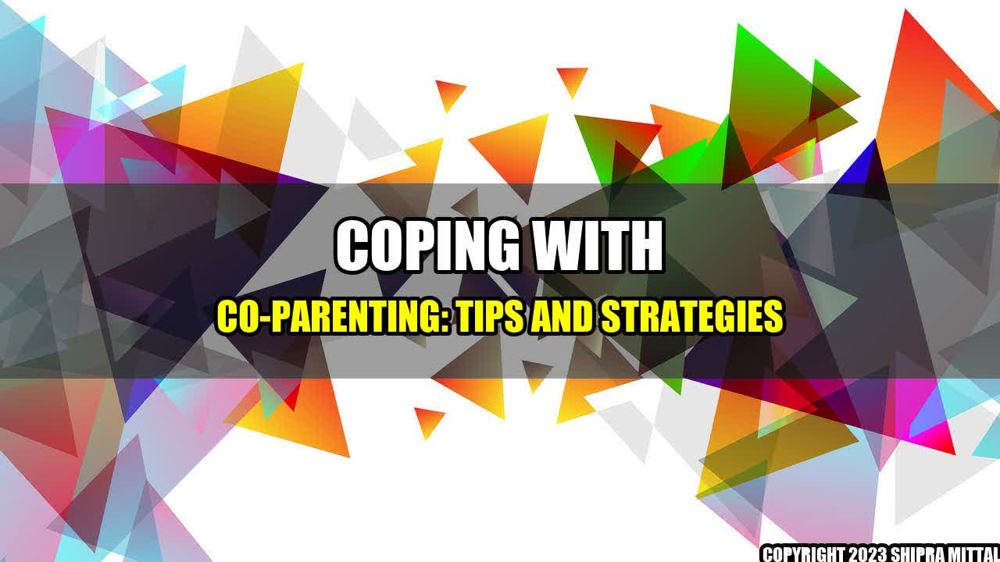

Coping with Co-Parenting: Tips and Strategies

Co-parenting after a divorce or separation can be a challenging, emotional and stressful experience. However, it is essential for the well-being of the children involved to have healthy and effective co-parenting relationships. According to a study by the American Psychological Association, children who have parents that are able to co-parent amicably have better outcomes when it comes to academic, social, and emotional well-being
Here's a story of John and Sarah who separated after 10 years of marriage and had a difficult time co-parenting their two kids. Their separation was not amicable and they frequently argued and fought in front of the children. They were unable to communicate effectively with each other and made different parenting decisions. Their children were caught in the middle and suffered from anxiety, depression and behavioural problems.
The Importance of Co-Parenting
Co-parenting is a process where two separate parents work together to raise their children. It involves effective communication, collaboration and cooperation to make decisions about the children's well-being. When parents can put aside their own conflicts and focus on the children, it can help minimize the negative effects of divorce or separation. Here are some quantifiable examples:
- Children feel more secure when they have a consistent routine and predictable schedule
- Children are less likely to experience behavioural problems and mental health issues when parents communicate effectively and cooperate with each other
- Children are more likely to have higher academic achievements and better social skills when parents work together to create a nurturing and supportive environment
Strategies for Effective Co-Parenting
Here are some strategies that can help make co-parenting a more positive experience:
- Communicate Effectively: Co-parents need to communicate regularly about their child's needs, schedules, and progress. It is important to keep each other informed about any changes or unexpected events. Communication should be respectful, constructive and focused on the children's well-being. Parents can choose different modes of communication that work best for them, including emails, texts, phone calls, and face-to-face meetings.
- Collaborate on Parenting Decisions: Co-parents should try to make decisions about their children together. This includes decisions about medical care, education, and extracurricular activities. When parents have different opinions or preferences, it is important to find a compromise and make decisions that are in the best interests of the children. When children see their parents working together, they feel more secure and confident.
- Be Flexible: Co-parenting involves flexibility and adaptability. Parents need to be willing to adjust schedules, make changes, and be open to new ideas. Flexibility can help reduce conflicts and make co-parenting more manageable. It is also important for parents to respect each other's time and availability.
Tips for Coping with Co-Parenting Challenges
Despite best efforts, co-parenting can be challenging and difficult at times. Here are some practical tips for coping with common co-parenting challenges:
- Managing Your Emotions: Divorce or separation can bring up a lot of strong emotions, including anger, sadness, and grief. It is important to find healthy ways to manage these emotions, such as seeking support from friends or a therapist, practicing stress-reducing activities like meditation or yoga.
- Focusing on the Big Picture: When co-parenting conflicts arise, it can be tempting to focus on the immediate issue and lose sight of the big picture. It is important to remember that co-parenting is a long-term process and that both parents need to work together to raise healthy, happy and well-adjusted children.
- Seeking Professional Support: Co-parenting can be challenging even for the most amicable couples. If the conflicts and challenges become overwhelming, it can be helpful to seek professional support. A family therapist or mediator can help co-parents work through their differences and find strategies that work for them.
In Conclusion
Co-parenting can be difficult, but it is essential for the well-being of the children involved. When parents can communicate effectively, collaborate on parenting decisions and be flexible, they can create a positive co-parenting relationship. It is important to remember to manage your emotions, focus on the big picture and seek professional support when needed. By doing so, parents can create a nurturing and supportive environment for their children to thrive in.
Curated by Team Akash.Mittal.Blog
Share on Twitter Share on LinkedIn